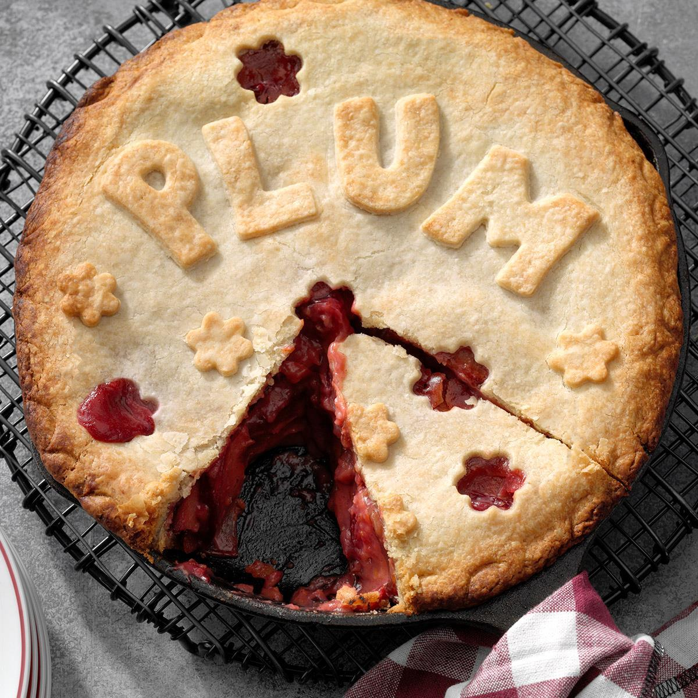

Plum Pie

Description
I just moved back home and my house always has
about 20 plums in it at a time. My parents love
stone fruit! Unfortunately, we can't seem to eat
them quickly enough and some were starting to spoil.
I knew I had to figure out something to do with all
the plums, so I looked up this recipe.
This is not a recipe that has been in my family for
centuries or even one that my Grandma made me when
I used to visit. This is simply a recipe for
Plum Pie that I am going to use to
solve the current plum predicament that I'm in currently.
Also, hopefully I make an awesome webpage too!
Ingredients
- 4 cups of sliced plums
- 1 tbsp lemon juice
- 1/2 cup sugar
- 1/4 cup all-purpose flour
- 1/4 tsp salt
- 1/4 tsp ground cinnamon
- 1 frozen pie crust (9 inches)
Topping:
- 1/2 cup sugar
- 1/2 cup all all-purpose flour
- 1/4 tsp ground cinnamon
- 1/4 tsp ground nutmeg
- 3 tbsp cold butter
Steps
- Preheat oven to 375°. In a large bowl, sprinkle
plums with lemon juice. Combine sugar, flour,
salt and cinnamon. Add to plums; toss gently to coat.
Pour into pie shell.
- For topping, in a small bowl, combine sugar, flour,
cinnamon and nutmeg; cut in butter until crumbly.
Sprinkle over filling.
- Bake until filling is bubbly, 50-60 minutes. Cover
edge loosely with foil during the last 20 minutes if
needed to prevent overbrowning. Cool on a wire rack.
Return to Main Page